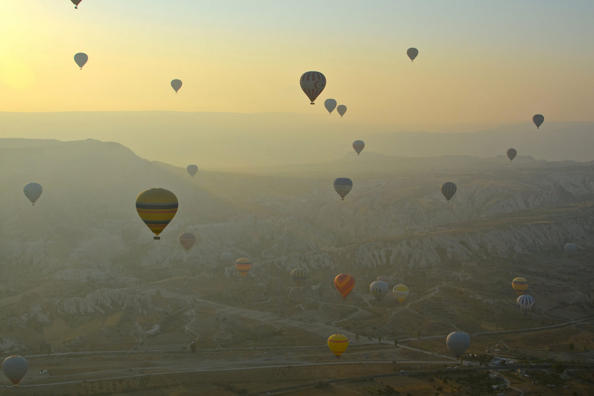
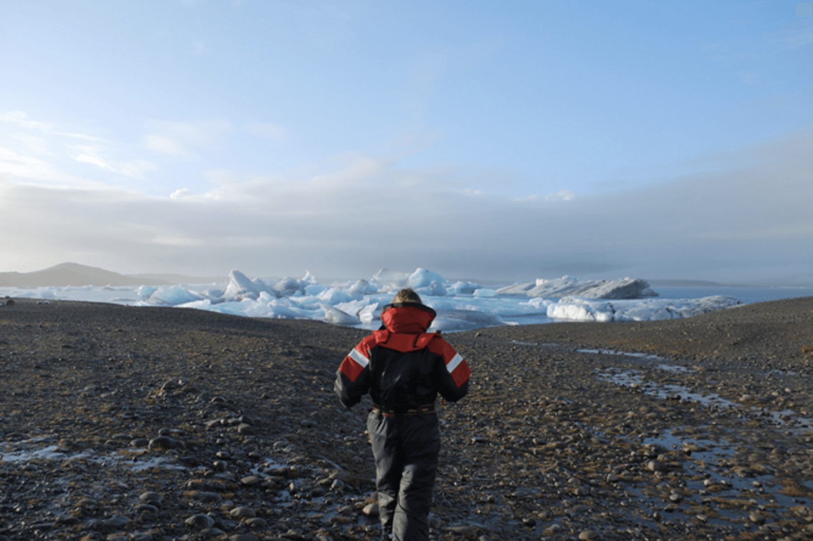
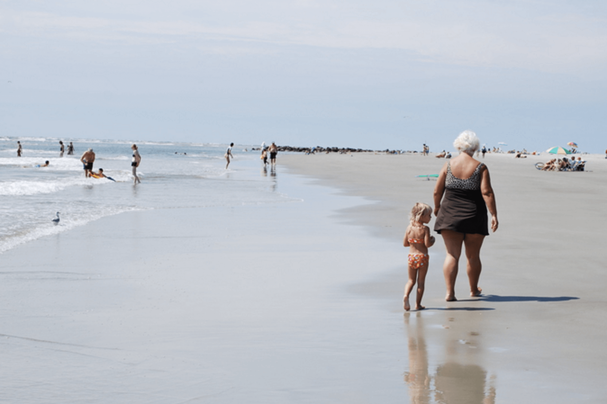
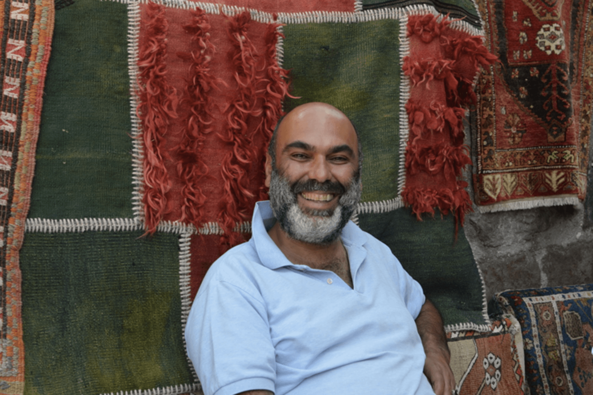
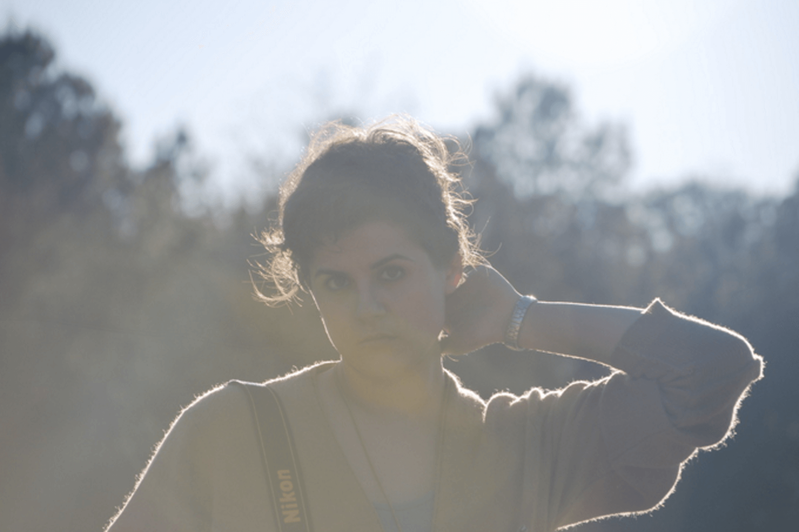
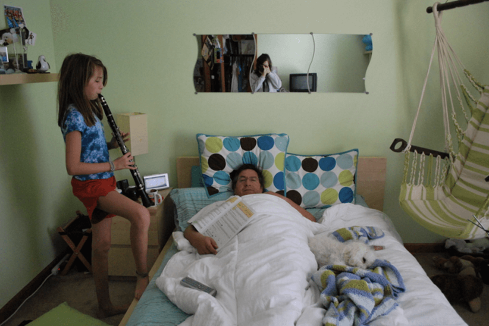
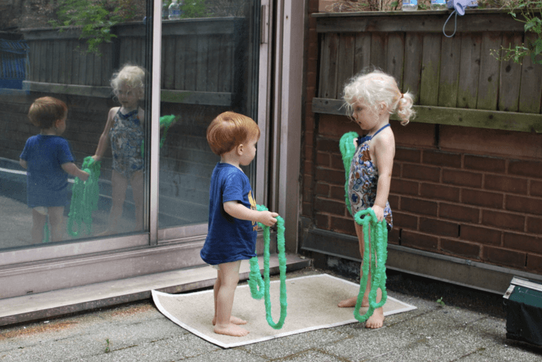
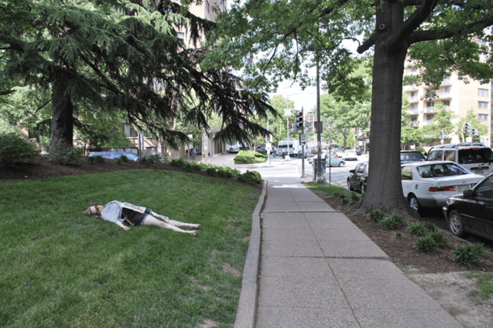
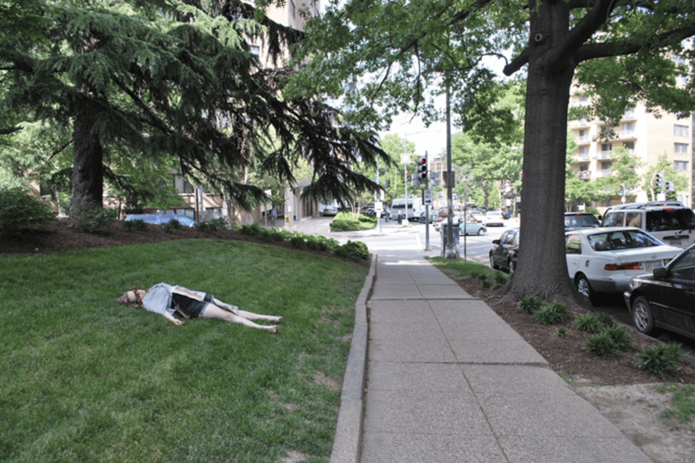
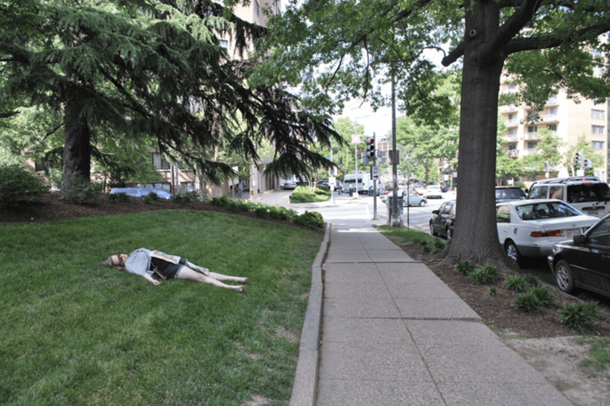

Laura Buitrago Photograghy
Photography for me has always been a sort of compulsion. My favorite subjects are candids of everyday life. Photos of mine have appeared in Science News, Society for Science & the Public blog and publications, Science News for Students, Baltimore Magazine, and DC neighborhood blog Prince of Petworth with over 50 photos chosen for publication. I've been an event photographer for the Intel International Science & Engineering Fair, and for events with Neighborhood Farm Initative, and the Global Fund for Human Rights.







 

